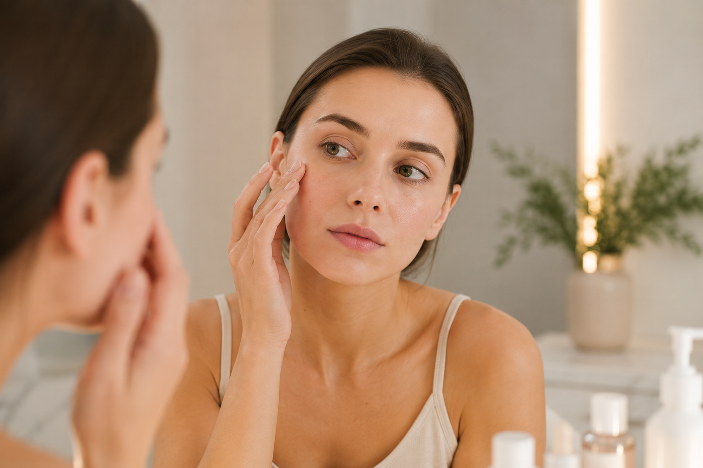
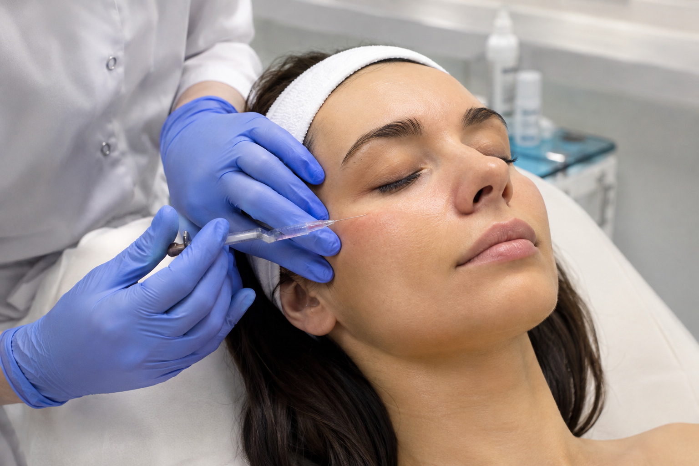
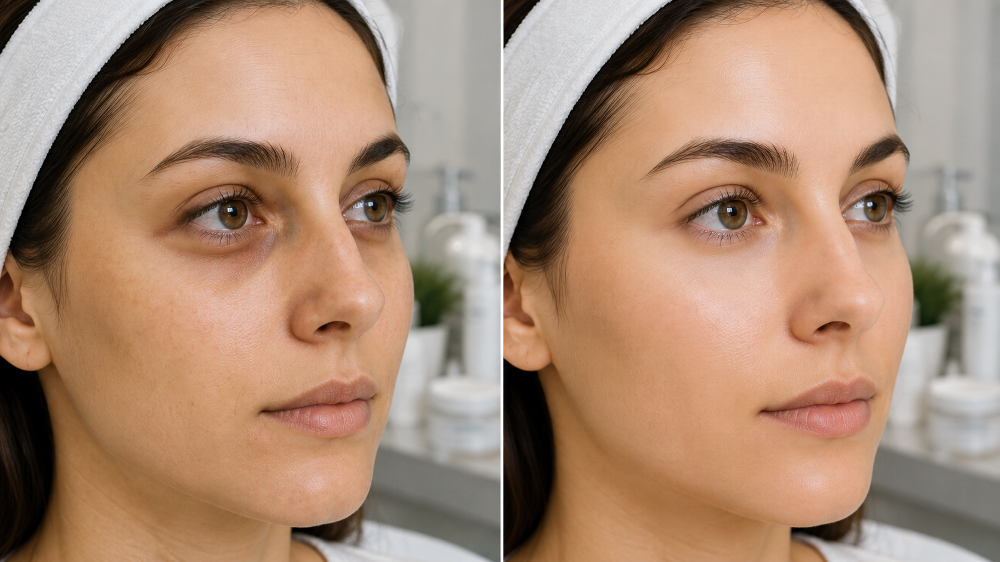

Темные круги под глазами: почему появляются и как вернуть коже свежий вид
Темные круги под глазами — одна из самых частых причин обращения к врачу-косметологу. Многие считают, что проблема возникает исключительно из-за недосыпа, однако это далеко не всегда так. Даже после полноценного отдыха лицо может выглядеть уставшим, если причина кроется в особенностях строения кожи, возрастных изменениях или нарушении микроциркуляции. Современная косметология в Севастополепозволяет определить источник проблемы и подобрать эффективный способ коррекции. Основные причины темных кругов связаны с анатомией периорбитальной зоны, образом жизни, возрастными изменениями и состоянием здоровья.

Почему появляются темные круги под глазами?
Кожа вокруг глаз значительно тоньше, чем на остальных участках лица. Под ней практически отсутствует выраженная жировая прослойка, поэтому сосуды становятся более заметными. Любые изменения кровообращения, лимфооттока или качества кожи сразу отражаются на внешнем виде этой области.
-
Наиболее распространенные причины появления темных кругов:
- наследственная предрасположенность;
- тонкая кожа вокруг глаз;
- хронический недосып и переутомление;
- возрастное снижение выработки коллагена;
- обезвоживание организма;
- стресс;
- аллергические реакции;
- гиперпигментация;
- вредные привычки;
- дефицит железа и некоторые заболевания внутренних органов.
Именно поэтому универсального способа избавиться от темных кругов не существует. Сначала необходимо определить их причину.
Какие бывают темные круги?
Во время консультации врач-косметолог в Севастополе оценивает характер изменений, поскольку тактика лечения напрямую зависит от типа проблемы.
-
Наиболее часто встречаются:
- сосудистые;
- пигментные;
- возрастные, связанные с потерей объема тканей;
- круги, вызванные отечностью и нарушением лимфооттока.
Каждый вариант требует индивидуального подхода и разных методов коррекции.
Как убрать темные круги под глазами?
Если проблема связана с переутомлением или образом жизни, рекомендуется нормализовать режим сна, питьевой режим и питание. Однако при выраженных возрастных изменениях или наследственных особенностях домашний уход редко дает заметный результат.
В современной косметологии применяются процедуры, направленные на улучшение качества кожи и восстановление ее структуры.

-
В ЗимаКлиник для коррекции области вокруг глаз используются современные методы инъекционной и аппаратной косметологии
- биоревитализация — интенсивное увлажнение кожи и стимуляция выработки собственного коллагена;
- мезотерапия — введение витаминных комплексов и активных компонентов для улучшения микроциркуляции;
- контурная пластика — коррекция носослезной борозды при возрастной потере объема;
- аппаратные методики, направленные на улучшение качества кожи.
Эти процедуры входят в перечень услуг клиники и подбираются индивидуально после консультации специалиста.
Почему важно обратиться к врачу-косметологу?
Самостоятельно определить причину появления темных кругов практически невозможно. Иногда проблема связана с особенностями анатомии, а иногда может быть одним из проявлений общего состояния организма. Поэтому перед началом косметологической коррекции необходима консультация специалиста.
В клинике косметологии ЗимаКлиник каждому пациенту составляют индивидуальный протокол лечения. Такой комплексный подход позволяет воздействовать не только на внешний дефект, но и на причину его появления. Именно сопровождение пациента до достижения результата является одним из принципов работы клиники.
Профилактика темных кругов
-
Чтобы кожа вокруг глаз дольше оставалась свежей и здоровой, специалисты рекомендуют:
- соблюдать режим сна;
- защищать кожу от ультрафиолета;
- использовать качественный домашний уход;
- поддерживать водный баланс;
- своевременно обращаться к врачу при появлении выраженных изменений.
При первых признаках возрастных изменений профилактические косметологические процедуры помогают сохранить качество кожи значительно дольше.

Консультация косметолога в Севастополе
Если вас беспокоят темные круги под глазами, не стоит пытаться скрыть их только косметикой. В ЗимаКлиник врач-косметолог проведет диагностику, определит причину проблемы и подберет индивидуальную программу лечения. Благодаря современным методикам можно значительно улучшить качество кожи, сделать взгляд более открытым, а лицо — свежим и отдохнувшим.